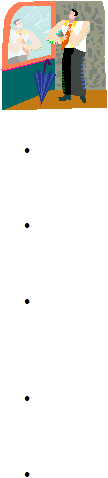

|

Page 4
In order to effectively achieve your overall career objectives or the objectives within
a given task, you must use clearly defined methods to carry out those activities. This
includes the setting of goals, decision making, planning, and scheduling. Once the
tasks are completed, you must evaluate the success of these methods.
The following is a list of five key points to remember to help you master the art of
self-management.
Be consistent. Part of managing oneself is the ability to be stable. The values you hold dear
should always be transparent. Always changing can not only cause others to question your
beliefs, but it can also cause you to become confused about what you truly believe.
Stick to the plan. If you are scheduled to complete a particular task, do it. Don’t just do it, but
make sure it is done in a timely manner. It is easy to feel out of control when you disregard the
plan you are to follow.
Be accountable. There are times when things don’t work out as you plan, but you have to be
able to admit that and then use your flexibility to get things back on track. The ideal result is that
you easily bounce back and complete the task, but even during those times when this is not the
case, you are expected to adjust.
Educate yourself. We live in an ever-changing world and you want to be able to keep up with it.
Don’t let change pass you by, embrace it. Be an avid reader. Talk and listen to mentors and
peers. They may know something that could help you along your journey.
Stay physically fit. Many people don’t think of staying fit when they talk about self-
management, but it is a very important part of being able to practice the four preceding points.
Exercising your body is just as crucial to self-management as exercising your mind. A body that is
not well rested, nutritionally fed, or physically exercised can lead to emotional and physical
illnesses.
|